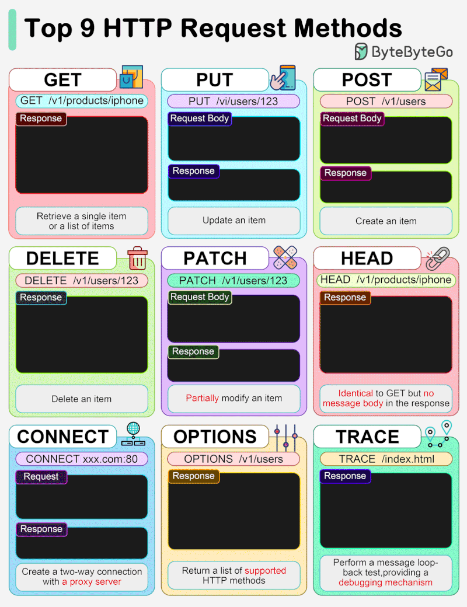

Table of Content:
HTTP Methods & Web Security
Every web attack starts with an HTTP request. If you don't fully understand the verbs, you'll miss bugs. This post covers the methods and the classic misconfigurations that turn them into vulnerabilities.
The HTTP methods
GET— retrieve a resource. Should be safe and idempotent.POST— submit data, often creating/changing state.PUT— replace a resource. Dangerous if unauthenticated.DELETE— remove a resource. Same caveat as PUT.PATCH— partial update.OPTIONS— list allowed methods (great for recon).HEAD— like GET but headers only.TRACE— echoes the request; tied to Cross-Site Tracing.
Request/response flow
The lifecycle of a single request:

Where it goes wrong
Developers protectGETandPOSTand forget the rest exist. The server often doesn't.
- Dangerous methods enabled:
PUTcan upload a webshell. - Method-based authz bypass:
POST /adminis blocked butGET /adminisn't. - HTTP verb tampering: non-standard verbs slipping past filters.
- TRACE + XSS: Cross-Site Tracing to steal HttpOnly cookies.
How to test
Enumerate allowed methods with OPTIONS:
$ curl -i -X OPTIONS https://target.tld/api/users
HTTP/1.1 200 OK
Allow: GET, POST, PUT, DELETE, OPTIONS
Then try the dangerous verbs explicitly and compare authorization behaviour
between methods. Tools like Burp Suite (Repeater) or
ffuf -X make this fast.
Next post: turning a writable PUT into RCE in a CTF box.